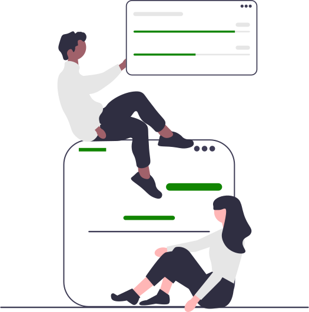
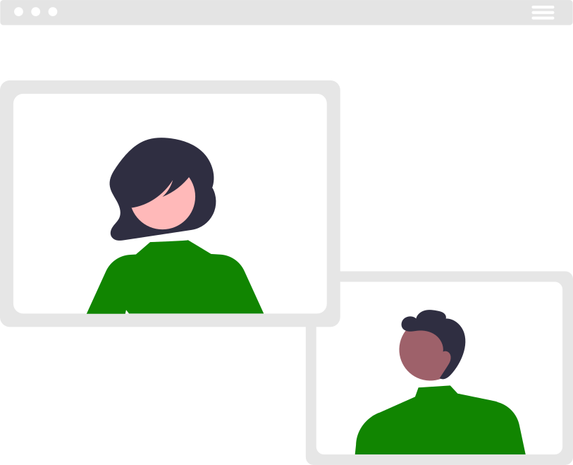

À Propos de SmartZen
Votre carrière mérite mieux que le stress et l'incertitude. Chez SmartZen, nous vous accompagnons vers une réussite qui vous ressemble vraiment. Notre approche unique allie performance et bien-être, pour construire une carrière épanouissante sur le long terme.
Plus qu'un simple coaching, nous créons avec vous un espace où vos ambitions professionnelles s'harmonisent naturellement avec vos valeurs personnelles. Chaque parcours est unique, et c'est précisément ce qui fait la richesse de notre accompagnement.
Nos Services
-
Coaching carrière personnalisé
Définissez votre trajectoire professionnelle idéale et les étapes pour y parvenir -
Bilan de compétences approfondi
Découvrez vos forces uniques et faites-en des atouts professionnels -
Préparation d'entretiens
Abordez vos entretiens avec confiance et authenticité -
Gestion du stress professionnel
Développez une efficacité sereine face aux défis quotidiens

Faisons connaissance

Prenez 30 minutes pour explorer ensemble vos objectifs professionnels et voir comment nous pouvons vous accompagner.
Notre Approche
Performance & sérénité
L'excellence professionnelle naît d'un esprit apaisé. Notre méthode vous guide vers une efficacité naturelle qui s'inscrit dans la durée, loin des pressions contre-productives.
Croissance & équilibre
Votre développement professionnel s'inscrit dans une vision globale de votre vie. Ensemble, nous élaborons des stratégies concrètes pour avancer dans le respect de vos priorités personnelles.
Rigueur & flexibilité
Notre accompagnement s'appuie sur des méthodologies éprouvées, tout en s'adaptant à votre situation unique. Nous avançons à votre rythme, sur un chemin construit pour vous.
Expertise & bienveillance
Notre expertise se met au service de votre réussite dans une ambiance de confiance et d'écoute. Nous croyons en un accompagnement professionnel où l'humain reste au centre.
High-tech & humain
Dans un monde professionnel en constante évolution, nous vous aidons à maîtriser les outils digitaux tout en préservant votre authenticité. La technologie devient votre alliée, pas votre maître.